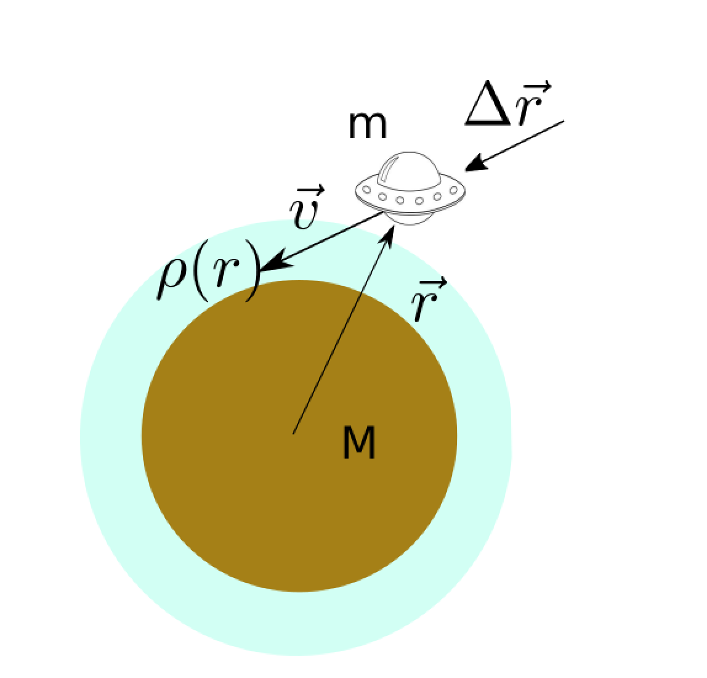

Forrige side🙂 🙁Numerisk løsningFORUM
Nå har vi samme situasjon en gang til, men med vektorer. En romskip har posisjonsvektor r⃗. Vi skal i resten av dette emnet bruke konseptet posisjonsvektor ganske mye. 
En posisjonsvektor... ... er en vektor som peker fra origo i koordinatsystemet ditt til den posisjonen der objektet du studerer er. Når objektet endrer posisjon så endrer også posisjonsvektoren seg tilsvarende slik at den alltid peker på objektets posisjon.
I figuren ser du dermed at vi har satt origo i sentrum av planeten. Romskipet har hastighetsvektor v⃗. Hva er forflytningen Δr⃗ som romskipet får i løpet av tid Δt? Ganske riktig ja, strekningsvektor er hastighetsvektor ganger tid, dermed er Δr⃗ = v⃗Δt.
Neste side